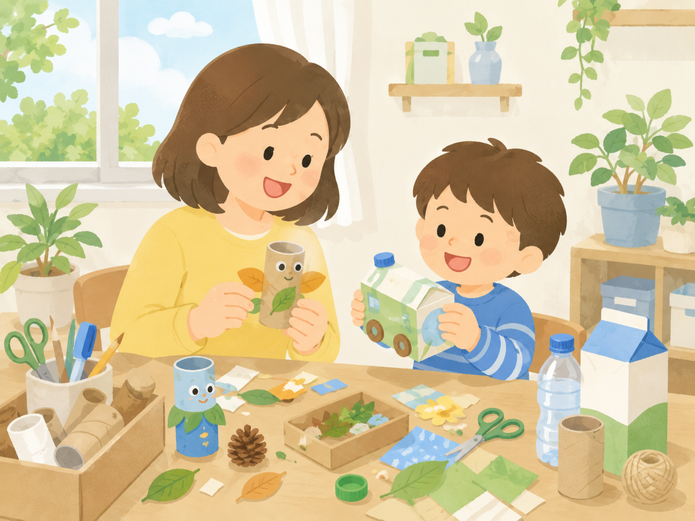
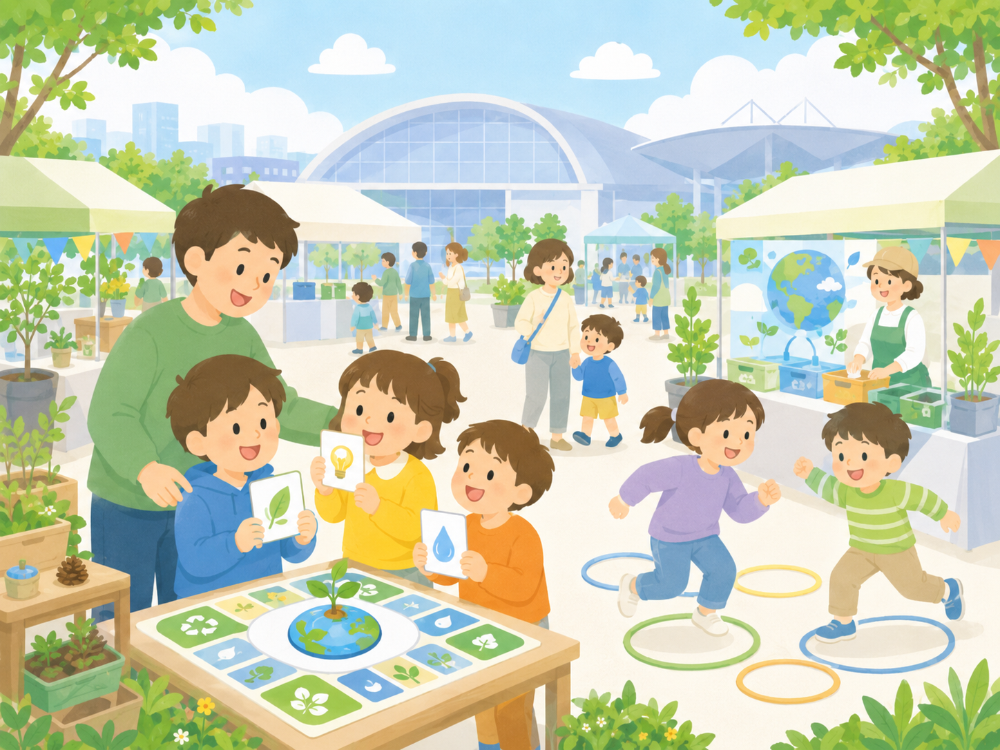
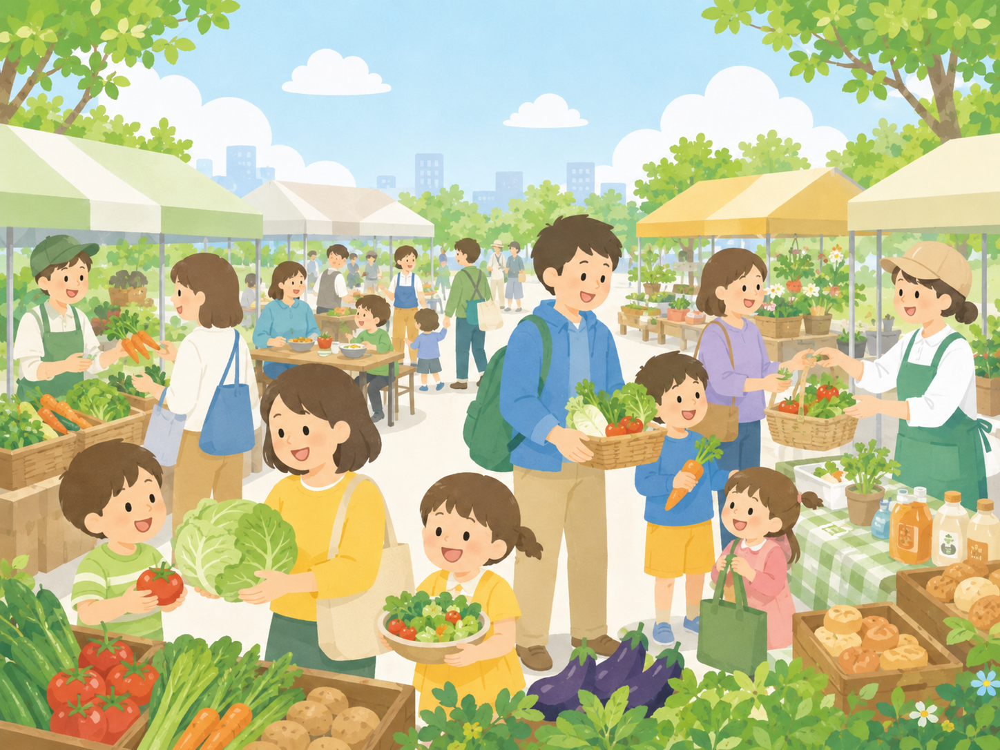
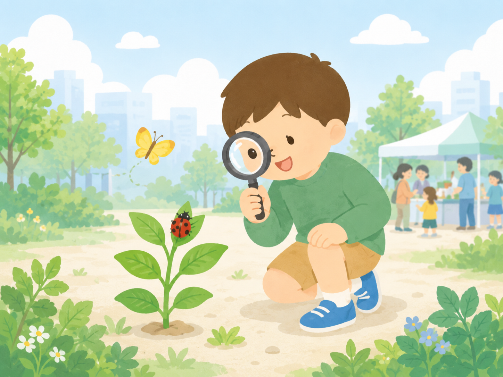

遊びながら、
未来をはぐくむ。
子どもから大人まで楽しめるサステナビリティ
100年後に向けた持続可能な社会と住みよい環境を目指す！
オンラインで学ぶ
10月10日(土) 10:00~
幕張メッセ開催
10月11日(日) 10:00～16:00
環境だけでなく、食、健康、地域、つながりまで。子どもたちの「やってみたい」から、これからの心地よい暮らしを親子で見つける一日です。

入場無料・親子で参加できます
イベント実績
1996年から共創関係のもとに築いてきた信頼ある規模感です。
地域の環境啓発イベントとしての歴史
前回来場実績（千葉近郊のファミリー層中心）
産官学民の多様な出展共創規模
サステナブル体験プログラム
サステナブルな暮らしを、親子で楽しく体験できる4つの入口。

つくる
身近な素材を活かして、ものを大切にする感覚と創造力を育てます。

遊ぶ
ゲームやクイズを通じて、身の回りのサステナブルを楽しく発見します。

ふれあう
地域の食やからだにやさしい選択から、ウェルビーイングを味わいます。

見つける
会場のブースから、未来の暮らしのヒントを見つけましょう。
親子サステナブルビンゴ
会場内のチェックポイントをめぐって、環境・食・健康・地域のヒントを集めよう！
全部集めると記念品をプレゼント。

出展ブース一覧
千葉県内の市民団体、企業、大学、自治体が、サステナビリティとウェルビーイングにつながる取り組みを紹介します。
※詳細な出展リストは、2026年9月上旬に公開予定です。お楽しみに！
オンラインで学ぶ
会場に来られない方も、動画や資料でサステナブルな取り組みに触れられます。
※オンライン出展リストは、2026年9月上旬に公開予定です。お楽しみに！
タイムスケジュール
動画・資料で、各団体のサステナブルな取り組みをご覧いただけます。
親子向け体験プログラム、ステージ、マルシェ、サステナブルビンゴを実施します。
会場マップ
幕張メッセ 国際会議場 2階の広々としたフロアをフル活用！
マップ詳細は後日公開予定
現在、出展レイアウト調整中です。ベビーカー優先通路や授乳室の位置も記載します。
来場に関する重要情報
安心して心地よく楽しんでいただくために、事前のご確認をお願いします。
🎟️ 入場料・予約
入場料は完全無料です。一部の特別体験型ワークショップを除き、事前予約も不要です。
🍼 ベビーカー・授乳室
ベビーカーのまま入場可能です。会場内に臨時のおむつ交換台＆個室授乳スペースを完備しています。
🌦️ 天候について
屋内（国際会議場）での開催となるため、雨天時でも通常通り開催いたします。
アクセス
幕張メッセ国際会議場（千葉市美浜区中瀬2-1）
電車でお越しの方
JR京葉線「海浜幕張駅」から徒歩約5分
バスでお越しの方
幕張メッセ中央バス停すぐ
よくある質問
来場に関して寄せられるご質問と回答をまとめました。
お問い合わせ
一般来場やボランティア希望に関する疑問は、お気軽にお問い合わせください。
一般来場・プログラムについてのお問合せ